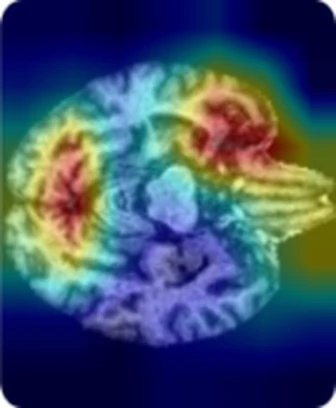
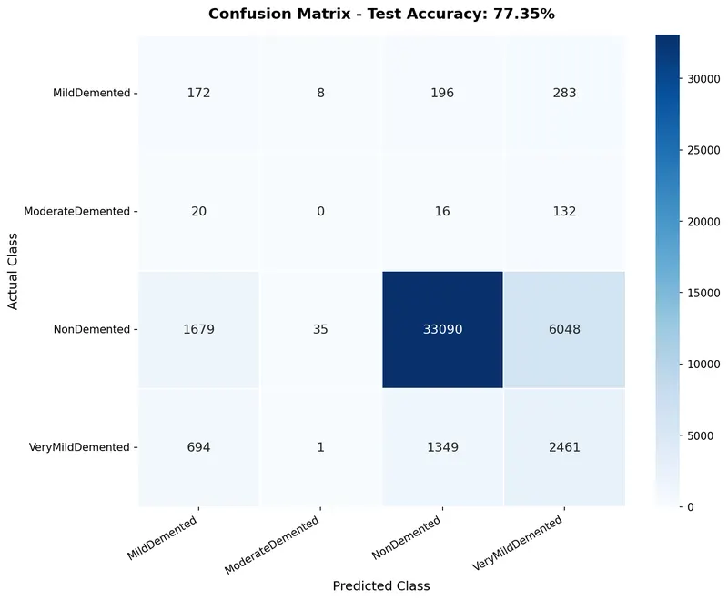
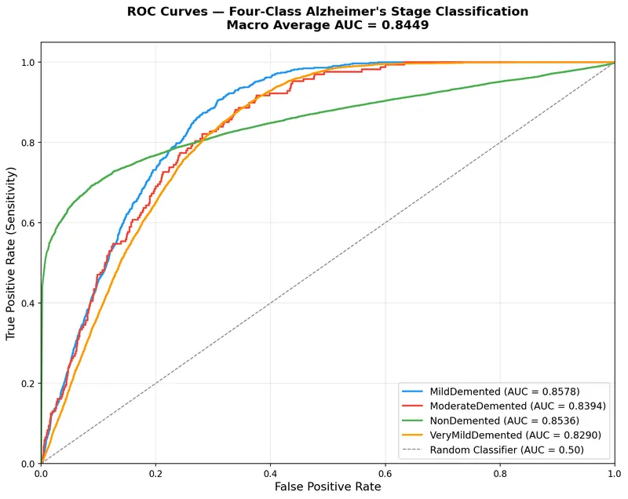
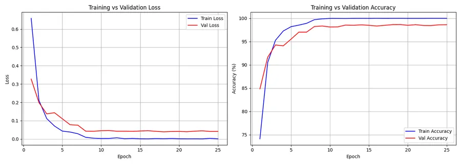
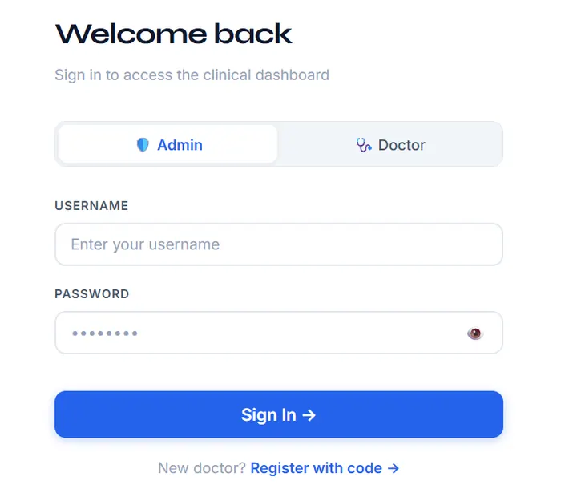

Medical AI research prototype
NeuroScan AI
Can a doctor see why a model flags early Alzheimer's? NeuroScan AI classifies brain MRI scans into four Alzheimer's stages, shows the regions behind each prediction with Grad-CAM heatmaps, and wraps both in a hospital web app.
The source repository is private.
- Role
- Designer and developer
- Context
- Final-year project, B.Sc. Computer Science, 2026
- Status
- Research prototype; web app deployed
- Stack
- PyTorch, Flask, SQLite


Grad-CAM viewer
Slide to fade the heatmap in and out over the scan. Warm colours mark the regions that most influenced the prediction.
The problem
Deep-learning models can flag signs of Alzheimer's in an MRI scan, but a bare label gives a doctor no way to check the reasoning. I spent my final year on one question: when a model says a scan looks like early Alzheimer's, can a doctor see why?
Objectives
- Classify MRI scans into four stages: NonDemented, VeryMildDemented, MildDemented and ModerateDemented.
- Show the regions behind each prediction with Grad-CAM, so a prediction can be inspected instead of taken on trust.
- Put the model inside a workflow a hospital would recognise: admins, doctors, patients and their scans.
- Report results honestly, including where the model is weak.
My role
I built the whole system: preparing the data, training and evaluating the model, generating Grad-CAM heatmaps, and the Flask API and web interface around them.
Main features
Four-stage classification
EfficientNet-B0, fine-tuned with transfer learning on 224×224 MRI slices.
Grad-CAM heatmaps
Each prediction comes with a heatmap of the regions that most influenced it.
Admin and Doctor roles
JWT sign-in. Admins issue single-use registration codes, and can deactivate or reactivate doctor accounts.
Patient records and MRI upload
Doctors add patients, upload scans and see each scan's prediction with its heatmap.
Transfers with history
Admins move patients between doctors, and every transfer is recorded as an audit trail.
Dashboards
The admin dashboard counts doctors, patients, scans, unused codes and transfers; each doctor sees their patients broken down by predicted stage.
How it's built
Open any part for the detail.
Data
OASIS Alzheimer's MRI (Kaggle): 44,355 training images and a separate test set of 46,184. The 80/20 training and validation split keeps each patient's scans together, so no patient appears on both sides.
Model
EfficientNet-B0 with transfer learning (timm): 4,012,672 parameters fine-tuned, 224×224 input.
Training
Class-weighted cross-entropy, light augmentation, Adam 1e-4, batch 32, 25 epochs: about 119 hours on a laptop with no GPU (training, not inference).
Grad-CAM
For Mild and Moderate cases the heatmaps concentrated around the hippocampus, medial temporal lobe and ventricles: consistent with known Alzheimer's regions, but not clinically validated.
Web app
Flask REST API with separate modules for auth, admin, doctors and patients; Flask-JWT-Extended and Flask-SQLAlchemy over SQLite; an HTML, CSS and JavaScript front end. The trained model is downloaded from Hugging Face when the app starts, and the app is deployed on Render.
Results
98.66%validation accuracy
77.35%held-out test accuracy
The test set is heavily skewed (88.5% NonDemented), so I treat the gap as a warning about the split, not a verdict on the idea.
Research prototype. Not clinically validated and not a medical device.
Technologies
- Python
- PyTorch
- timm
- torchvision
- OpenCV
- scikit-learn
- NumPy
- Pandas
- Matplotlib
- Seaborn
- Flask
- Flask-JWT-Extended
- Flask-SQLAlchemy
- SQLite
- HTML, CSS, JavaScript
- Hugging Face
- Render
Evaluation and screens
-

Confusion matrix on the held-out test set. -

ROC curves, one-vs-rest. -

Training and validation curves over 25 epochs. -

Sign-in with Admin and Doctor roles.


Challenges and solutions
No GPU for training
I used transfer learning on a small pretrained network, EfficientNet-B0 with about 4 million parameters, and kept training to 25 epochs. Even so, training took about 119 hours on a laptop CPU.
A score that looked too good
The model reached 98.66% on validation but 77.35% on the separate test set, which is 88.5% NonDemented. The training split keeps each patient's scans together, so the gap is not one patient leaking into both sides. I report both numbers, treat the gap as a warning about the split rather than a verdict on the idea, and plan stratified splitting next.
A model too large to ship with the code
The trained weights live on Hugging Face, and the app downloads them when it starts, so the deployed app on Render stays small.
Outcome and status
Final-year project for my B.Sc. in Computer Science (2026). The web app is deployed and the trained model is published on Hugging Face.
It is a research prototype: not clinically validated and not a medical device.